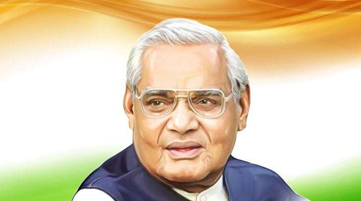

Shree.Atal Bihari Vajpayeeji

Atal Bihari Vajpayee (25 December 1924 – 16 August 2018) was an Indian politician, statesman and a poet who served three terms as the Prime Minister of India, first for a term of 13 days in 1996, then for a period of 13 months from 1998 to 1999, and finally, for a full term from 1999 to 2004. A member of the Bharatiya Janata Party (BJP), he was the first Indian prime minister who was not a member of the Indian National Congress party to have served a full five-year term in office.
- 1924: Atal Bihari Vajpayee is born in Madhya Pradesh’s Gwalior
- 1942: Arrested and held for 24 days. He later wrote in a piece titled ‘The Sangh is my Soul’: “I participated in the Quit India movement in 1942 and was jailed…”
- 1951: After working as a journalist, he joins the newly formed Bharatiya Jan Sangh
- 1957: Elected to the Lok Sabha for the first time
- 1962: Becomes a member of the Rajya Sabha
- 1975: Jailed during the Emergency
- 1977-79: Serves as the external affairs minister in the Janata Party government
- 1980: Cuts ties with the Janata Party and helps found the Bharatiya Janata Party. He is chosen as the president of the party
- 1992: Awarded the Padma Vibhushan for contribution in the field of public affairs
- 1996: Becomes the Prime Minister but is forced to resign in 13 days after the BJP unsuccessfully attempts to stitch together an alliance with regional parties. On May 28, he – in what has become a landmark speech — resigned on the floor of the House before a trust vote
- 1998: Sworn in as PM after the BJP emerges as the single largest party and forms the National Democratic Alliance government
- 1998: Under Vajpayee’s leadership, India conducts five nuclear tests on May 11 and 13 at the Pokhran range in Rajasthan. Seventeen days later, Pakistan conducts its own nuclear tests
- 1999: The government lasts a little over a year. Vajpayee resigns in April after his party loses the vote of confidence
- 1999: Becomes the PM for a third time in October after the NDA emerges as the largest political alliance
- 2000: Signs a statement on ‘US-India Relations: A Vision for the 21st Century’ along with Bill Clinton during the US President’s visit to India in March. The statement talks of a “pledge to reduce impediments to bilateral trade and investment, and to expand commerce between the two nations”
- 2000: In September, after an invitation to address a joint session of the US Congress, he speaks at a joint session. Vajpayee says his visit to Washington has “consolidated relations between the world’s two largest democracies and marked a new era in bilateral and global affairs”
- 2004: In May, he resigns as the PM following the NDA’s defeat in the Lok Sabha elections
- 2005: Retires from active politics
- 2009: Has a stroke that impairs his speech
- 2015: Conferred the Bharat Ratna, the country’s highest civilian award. In a departure from protocol, President Pranab Mukherjee drives to Vajpayee’s residence and presents the award to the ailing leader. Prime Minister Narendra Modi says: “There are crores of workers around the country who draw inspiration from Atalji”
- August 16, 2018: Vajpayee passes away in Delhi
Wikipedia about Atalji Click here